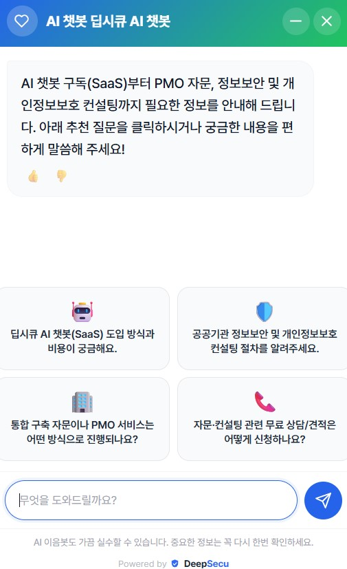
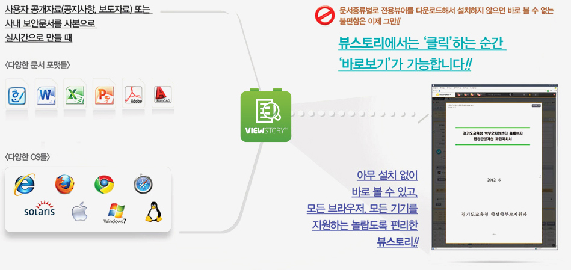
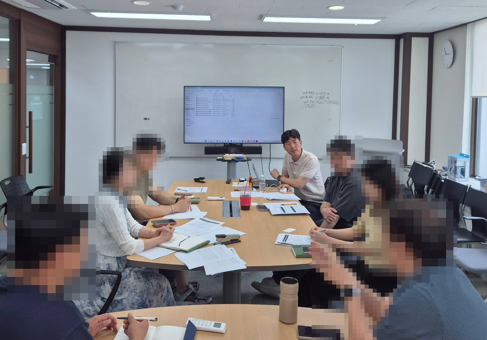
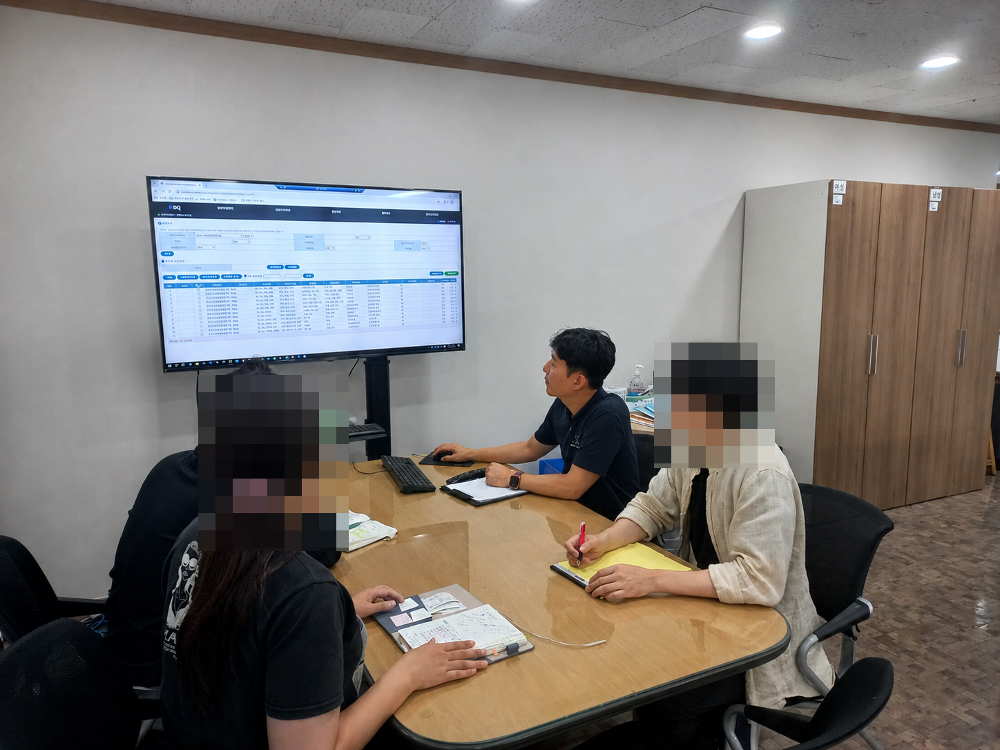
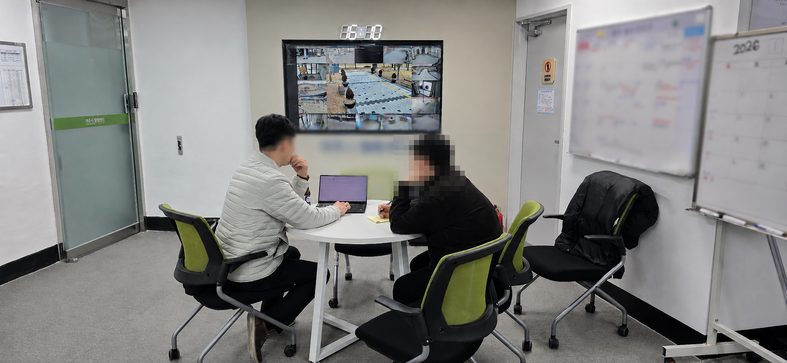
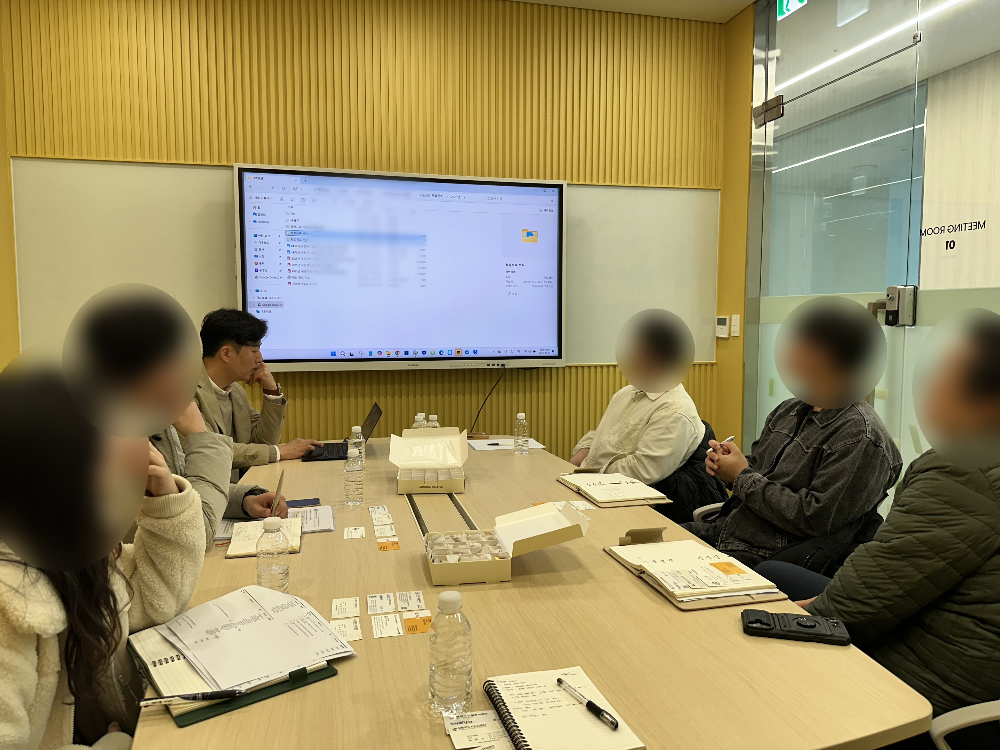
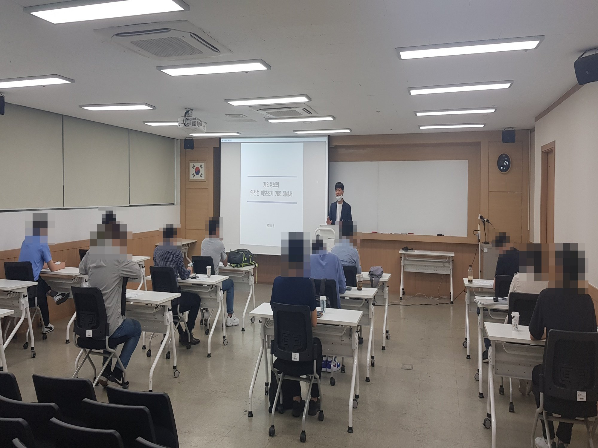

딥시큐(DeepSecu)는 공공 통합 IT 구축 PMO, 공공데이터, 정보보안 및 개인정보보호를 아우르는 프리미엄 자문 파트너입니다.
About DeepSecu
전산 인프라 기획부터 보안까지 원스톱 거버넌스를 정립합니다
딥시큐(DeepSecu)는 복잡한 공공 컴플라이언스와 정보시스템 아키텍처를 유기적으로 분석하여 발주기관의 권익을 보호하고 성공적인 사업 완수를 이끄는 기술 자문 파트너입니다.
단순 일회성 보안 검토를 넘어 행정안전부 및 개인정보보호위원회 지침을 완벽하게 만족하는 종합 마스터플랜을 도출하며, 정보시스템 통합(SI) 구축 사업을 체계적으로 관리·감독하는 독보적인 Slim & Agile PMO 역량을 보유하고 있습니다. 끊임없이 진화하는 보안 위협 and 복잡한 규제 환경 속에서, 공공기관이 가장 안전하고 효율적인 디지털 자산을 구축할 수 있도록 독립적이고 객관적인 제3자의 시각에서 명확한 가이드를 제공합니다.
🎯 딥시큐의 4대 자문 핵심 가치
🔍 철저한 독립성 확보
특정 제조사나 솔루션 공급사에 종속되지 않는 독립적 지위에서, 오직 발주기관의 예산 효율성과 기술적 타당성만을 검증합니다.
📊 정밀한 대가산정 검증
소프트웨어 기능점수(FP) 가이드라인을 기반으로 공급 원가와 이익률 구조를 현미경 검증하여 불필요한 예산 낭비를 방지합니다.
📋 실무형 컴플라이언스
서류상의 계획을 넘어 실제 정부 평가(보호수준 평가, 공공데이터 평가)에서 증적자료로 인정받을 수 있는 실무 중심 행정 서식을 정립합니다.
⚡ 선제적 리스크 통제
구축 사업 전 과정의 일정·품질 마일스톤을 밀착 모니터링하여, 개발 지연 및 보안 취약점 리스크를 선제적으로 식별하고 차단합니다.
History
연혁
2026
국립기관 및 대형 공공 자문 고도화
[국립문화예술단체] 대규모 통합 홈페이지 및 미디어 플랫폼 개편 사업 정보시스템 마스터플랜(ISMP) 및 현황(AS-IS) 정밀 자문 총괄. 기능점수(FP) 방식 기반 소프트웨어 개발비 및 직접경비 적정성 교차 검증 검토.
2026
정부 평가대상 기관 긴급 거버넌스 구축
[정부유관진흥원] 공공기관 평가대상(개인정보 보호수준 평가, 공공데이터 제공 운영실태 평가) 신규 지정에 따른 긴급 거버넌스 진단. 내부 전산 전담 인력 공석에 따른 책임관 지정 가이드 및 전사 개인정보파일 전수조사 행정 서식 정비 자문.
2026
공공기관 인프라 및 보안수준 진단 고도화
[서울 다수 자치구 시설관리공단] 전산실 핵심 하드웨어 장비 실태 조사, 용량 분석(Capacity Planning) 기반 규격 표준 가이드 수립 및 개인정보 보호수준 평가 대응 특화 컨설팅 집중 수행.
2025
우수 조달 정보보호 서비스 포트폴리오 확장
과학기술정보통신부 지정 정보보호 전문 서비스 인증 규격을 기반으로 임직원 체감형 보안 수준 향상을 위한 악성메일 모의훈련(Mind-SAT) 자문 프로세스 공식 도입.
2025
딥시큐 창립
정보통신 인프라 설계 자문, PMO, 공공데이터 정책 및 보안 거버넌스 특화 기업 정식 창립.
Home > Product
제품 소개
딥시큐(DeepSecu)가 검증하고 공식 공급하는 고성능 공공 디지털 서비스 소프트웨어 라인업입니다.

공공·기업 맞춤형 지능형 AI 챗봇 공급
초기 대규모 개발 및 가이드 설계에 대한 부담 없이, 운영 중인 웹사이트에 간단한 스크립트 플러그인 연동만으로 즉시 활성화하여 사용하는 고성능 대민 가이드용 AI 챗봇 위젯 솔루션입니다.
즉시 연동 플러그인: 별도의 대형 서버 인프라 구축이나 복잡한 개발 프로세스 없이 코드 삽입 형태로 가볍게 즉시 연동됩니다.
공공 컴플라이언스 안전망 세트: 개인정보보호 사전 스크리닝 필터 및 실시간 데이터 무결성 보장 기술이 탑재되어 민감한 데이터 노출 우려 없이 안전하게 상담 서비스를 수행합니다.
💰 AI 챗봇 서비스 도입 비용 산정 체계 (기관별 협의)
초기 대규모 인프라 구축 비용이 없으며, 대민 채널의 월간 트래픽 규모, API 호출 한도 및 커스텀 지식 데이터베이스 연동 범위에 따라 합리적인 맞춤형 라이선스가 산정됩니다.
라이선스 산정 기준
상세 연동 스펙 및 조건
비용 정책
월간 활성 이용자 (MAU)
누리집 또는 대민 채널의 실제 월평균 접속 트래픽 및 동시 상담 세션 한도 기준
도입 환경 분석 후 기관 맞춤형 매핑 (별도 협의)
LLM API 및 호출 한도
지정된 지식 데이터 질의응답을 위한 AI 모델 가동 빈도 및 토큰(Token) 사용량 설계
커스텀 DB 연동 범위
기관 내부 행정 문서, 민원 FAQ 데이터셋 임베딩 및 동적 웹 위젯 스킨 커스텀 마이징 범위
🔍 딥시큐 솔루션 연계 기술 자문 안내
딥시큐는 지능형 AI 챗봇 도입 시, 공공 지자체 가이드라인을 준수하는 민감 정보 및 대민 개인정보 노출 차단 필터셋의 안전성 검증을 무료로 지원합니다. 기관 내부 데이터의 무결성 확보를 위한 가벼운 연계 아키텍처 컨설팅은 [종합 자문 상담] 신청을 통해 원스톱으로 지원받으실 수 있습니다.

대민서비스 필수 솔루션 VIEWSTORY
간단하지만 강력한 대민 서비스! 다운로드 없이 브라우저에서 즉시 확인하는 고품질 문서 뷰어
공공기관 및 행정용 누리집 웹사이트 방문자가 첨부파일을 별도의 프로그램 설치나 다운로드 없이 원클릭으로 안전하고 빠르게 확인할 수 있도록 지원하는 검증된 **1등급 굿소프트웨어(GS) 인증** 솔루션입니다.
하이브리드 변환 아키텍처
문서 깨짐을 완벽 방지하는 **이미지 변환 방식**과 텍스트 검색 및 복사가 유연한 **HTML 변환 방식**을 유기적으로 선택 적용 가능하며, 다국어 번역 및 TTS 오디오 스트리밍을 동시 지원합니다.
다문화 인공지능(AI) 지원
국내 체류 외국인과 다문화 가정을 위해 **Llama 3.3 대용량 모델** 기반의 32개국 실시간 문서 번역 기능 및 고품질 다국어 음성 출력(TTS) 기술이 완벽히 내재화되어 있습니다.
검증된 대규모 도입 실적
**서울시 누리집 현황 총 133개소 중 115개 사이트**에 성공적으로 적용 완료하여 압도적인 무중단·무장애 안정성을 검증 완료했습니다.
🏛️ 조달청 나라장터 디지털서비스몰 등록 단가 가이드
본 가격 정책은 조달청 디지털서비스몰에 정식 계약 체결된 3자단가계약 상품 가격(VAT 포함) 기준이며, 1개 API 연동 스펙당 책정 단가입니다.
딥시큐는 과학기술정보통신부 지정 정보보호 전문 서비스 인증을 획득한 **Mind-SAT** 솔루션의 공식 공급 및 연계 기술 자문 파트너입니다. 공공기관 및 유관단체의 보안 환경(화이트리스트 지정 및 메일 시스템 연동 가이드라인)을 객관적으로 분석하고, 성공적인 모의훈련 집행과 사후 지표 보정을 위한 **딥시큐 단독 연계형 보안 행정 컨설팅**을 올인원으로 무상 지원합니다.
가벼운 시스템 실사 및 화이트리스트 가이드
M365, 구글 워크스페이스 및 다각화된 기관 자체 메일 서버 방화벽의 IP 우회 화이트리스트(White List) 기술 사양을 사전 검토하여 정밀한 실전 훈련 환경을 조율합니다.
사회공학적 최신 위협 시나리오 매핑
불법 소프트웨어 과태료 통지, 가상 해외 로그인 경고, 정부24 민원 고지 등 공공 실무 임직원들이 실제 업무 중 노출되기 쉬운 **생활밀착형 고도화 피싱 템플릿** 매핑 및 훈련 집행
딥시큐 특화 사후 거버넌스 컨설팅
단순 훈련 대장 발송 대행을 넘어, 부서별 열람율 및 첨부파일 실행율 통계를 기반으로 **기관 내부 개인정보 보호수준평가 및 정보보안 실태점검 증적 지표에 완벽 대응하는 행정 매뉴얼** 수립을 밀착 가이드합니다.
📊 모의훈련 서비스 비용 산정 체계 및 딥시큐 컨설팅 지원 가이드 (협의 과금)
악성메일 모의훈련 서비스는 참여 대상 임직원 규모 및 연간 훈련 회차(상·하반기 분할 등) 등에 따라 맞춤형 용역 예산안이 조율되며, 도입 기관에는 딥시큐의 수준평가 연계형 자문이 패키지로 기본 포함됩니다.
도입 비용 산정 요인
세부 조건 및 체크리스트
비용 정책 및 자문 혜택
전사 참여 인원 규모
훈련 대상자 수 세분화 파악 (부서 명단 구성 및 테스트 발송 타깃 규모 조율)
기관별 도입 환경 분석 후 최적의 합리적 견적 수립 (상담 협의)
연간 모의훈련 집행 횟수
임직원 인식 개선 극대화를 위한 주기적인 훈련 회차 (연 1회 집중형 / 상·하반기 분할 2회 등)
딥시큐 가벼운 컨설팅 지원
훈련 결과 분석서 연계 조치, 개인정보 파일 전수조사 서식 매핑 가이드 및 수준평가 증적 확보 자문 포함
🛡️ 공공기관 정부수준평가 증적 완비 안전망 가이드
정부 및 주무부처의 보안 점검 지침에 부합하도록, 모의훈련 집행 결과보고서를 공공 감사 서식 규격에 맞춰 정밀 보정해 드립니다. 소속 기관의 인프라 독소 조항 배제와 예산 검토 가이드라인은 **[종합 자문 상담]** 채널을 통해 제3자 독립 감리 관점에서 신속하게 도출해 드립니다.
Home > Business
사업 영역
딥시큐(DeepSecu)가 공급하는 핵심 원스톱 서비스 및 프리미엄 컨설팅 포트폴리오입니다.

대규모 정보시스템 통합(SI) 및 고품질 사업 관리 자문
복잡하게 분산된 대국민 공공 서비스 채널을 하나로 융합하고 다각화하는 정보화 사업의 리스크를 원천 방지합니다. 딥시큐는 행정안전부 지침에 따른 정보시스템 마스터플랜(ISMP) 수립 자문 및 제3자의 객관적인 관점에서 발주 기관의 예산 낭비를 방지하고 성공적 완수를 리딩하는 Slim & Agile PMO 서비스를 지원합니다.
🔍 주요 자문 및 기술 검증 범위
RFP 설계 가이드라인
발주 전 과업지시서와 제안요청서의 품질 사전 검토 및 요구사항 명세 최적화 가이드 제시
소프트웨어 대가 산정
기능점수(FP) 방식에 따른 정밀 개발원가 분석 및 합리적 예산 보정 자문 교차 검증
PMO 리스크 통제
수행사의 개발 진도 모니터링, 마일스톤별 핵심 산출물 및 인수인계 적정성 제3자 전면 감리 대행
📋 소프트웨어 개발 대가 산정 표준 검증 체계 가이드
연번
구분
산출 방식 및 세부 내역
검증/적용 가이드라인
1
소프트웨어 개발 원가
기능점수(FP) 방식 산정 원가 기본 적용
검증완료 기능 규모별 단가 검증 및 오버스펙 배제
2
이익 (Developer Profit)
개발원가의 최대 15% 가이드라인 이내 적용
준수 대가산정 가이드 기반 적정 마진율 교차 검증
3
직접경비
인쇄비, 여비, 회의비 등 실제 소요 액 산정
필터링 여비교통비 등 불명확 요소 차단으로 예산 효율화
4
교차 검증 (참고 대가)
투입인력(M/M) 기준 단순 인건비 총계 산출
안전망 FP 방식과 M/M 방식을 상호 비교하여 타당성 입증

신뢰 기반의 공공데이터 개방 전략 및 품질 고도화
공공기관이 보유한 원천 데이터의 안전하고 효율적인 민간 개방 표준 체계를 수립합니다. 데이터 개방에 따르는 저작권 컴플라이언스 요소를 정밀 분석하고, 공유 과정에서의 부작용을 통제할 수 있는 최적의 거버넌스를 설계합니다.
📊 주요 데이터 거버넌스 범위
품질수준 진단 가이드
행정안전부 공공데이터 품질 진단에 부합하는 정형/비정형 오염 차단 체계 정립 및 오류율 개선
데이터 가명 조치
민감 정보 유출 방지를 위한 가명·비식별화 처리 및 저작권 컴플라이언스 리스크 분석
오픈 API 규격 설계
타 기관 및 민간 서비스와의 유기적 데이터 연계를 위한 표준 인터페이스 검토 및 구축
📊 행정안전부 공공데이터 운영실태 평가 영역별 핵심 지표
📥 개방 및 활용 영역
차기 중장기 개방계획 수립 현황 점검
목록등록관리시스템 내 테이블 검토
목표 대비 실적 조기 이행율 평가
🔍 데이터 품질 관리 영역
보유 DB 메타데이터 최신화 및 등록
품질진단 결과 오류율 최소화 이행
표준 규칙 적용 및 구조 안정성 검증
💼 인프라 및 기반 영역
제공책임관 및 실무담당자 공식 지정
전 직원 데이터 문해력 교육 이수율
기관장 추진 의지 및 점검 회의록 증빙
공공 행정 인프라 고도화 및 최적 기술 규격 검토
지자체 산하 공단 및 공공단체의 핵심 전산 인프라(하드웨어, 스토리지, 네트워크) 실태를 정밀 자산 실사합니다. 특정 제조사나 솔루션의 종속성(Lock-in)을 배제하여 공정 경쟁을 유도하고 최적의 용량 산정(Capacity Planning)안을 도출합니다.
⚙️ 인프라 최적 자문 범위
노후 인프라 장비 교체
핵심 자산(서버, 스토리지, 백백기기) 성능 실사 및 데이터 가이드를 준수하는 교체 타당성 분석
RFP 기술 규격 최적화
종속성을 유발하는 독소 규격을 전면 스크리닝하여 예산 다각도 절감 및 공정 조달 실현
전산 공석 거버넌스
조직 내 자체 정보화 인력 부재 시 행정안전부 의무 지정 책임관(CISO·CPO 등) 임명 매핑
🗺️ 공공기관 전산 담당 부재 시 법정 의무 지정 리스크 진단
법정 필수 직위
의무 내용 및 미지정 시 리스크
근거 법령
정보보호 최고책임자 (CISO)
기관 정보보호 업무를 총괄하는 책임자 명시적 지정 및 주무부처 신고 의무
정보통신망법 제45조의3
개인정보 보호책임자 (CPO)
공공기관의 경우 임원급 이상 필수 지정. 미지정 시 과태료 처분 리스크
개인정보보호법 제31조
공공데이터 책임관
공공데이터포털 연계 및 기관 데이터 개방·품질 관리 총괄 책임 부여
공공데이터법 제9조
정보보안 책임관
기관 내 정보시스템 구성도 파악 및 전산실 서버 실물 자산 보안 총괄 지휘
국가정보보안기본지침 제5조

선제적인 핵심 기술 취약점 진단 및 보안 체계 구축
국가·공공기관 정보보안 기본지침 및 상위 감사 기준을 준수하기 위해 인프라 전반의 위협요소를 식별합니다. 고도화되는 외부 사이버 침해 시나리오를 방어할 수 있는 맞춤형 기술 방어선(To-Be 아키텍처)을 설계합니다.
🛡️ 기술 정보보안 진단 영역
시스템 아키텍처 진단
OS, 데이터베이스, 네트워크 및 웹 애플리케이션 상의 잠재적 위험 요소를 식별 및 분석
네트워크 이중화 자문
외부 노출 위험을 원천 격리하기 위한 DMZ(Web Zone) 및 내부 보안 Private Zone 분리 설계
보안 솔루션 최적 배치
웹방화벽(WAF), 침입방지(IPS), 유해사이트 차단 구간 최적화 및 이상 트래픽 탐지 룰셋 고도화
📋 국가 정보보안 지침 연계 기술 진단 표준 체계
연번
진단 대영역
핵심 보안 점검 포인트 및 내역
보안 강화 가이드라인
1
시스템 취약점 진단
서버 OS 커널 패치 설정, 기본 관리자 계정 변경 여부 스캔
필수점검 미사용 포트 전면 폐쇄 및 불필요 데몬 제거
2
네트워크 아키텍처
대민 서비스 구간(DMZ)과 내부 업무용 인프라 물리적 격리 검증
구조개선 침입방지시스템(IPS) 및 탐지 룰셋 주기적 최적화
3
데이터베이스 보안
공공 데이터베이스 내 고유식별정보 암호화 필드 및 알고리즘 검증
컴플라이언스 SHA-256 이상 고급 암호화 적용 및 접근기록 보관
4
웹 애플리케이션
OWASP Top 10 기반 SQL 인젝션, 크로스사이트 스크립팅(XSS) 취약점 진단
필터링 입력값 검증 소스코드 시큐어코딩 표준 가이드 수립

강화된 개인정보보호법 완벽 대응 및 컴플라이언스 체계 정립
행정안전부·개인정보보호위원회 주관의 '공공기관 개인정보 보호수준 평가' 지표에 체계적으로 대응합니다. ISMS-P 및 수준평가 편람을 통합한 346개 자체 점검 표준 지표를 기반으로, 수집부터 파기까지 전 생애주기별 법정 의무 이행 산출물들을 체계적으로 검증합니다.
📋 개인정보보호 컴플라이언스 리스크 진단
보호수준 평가 특화 컨설팅
부적합(N) 및 부분적합(P) 지표에 대한 정밀 Gap 분석, 행정 증적 자료의 유효성 검증 및 사전 스크리닝 보정 처리
핵심 정량 및 정성 지표 정비
정부수준평가 적시 제출을 위한 전사적인 개인정보파일 전수조사 설계 마스터플랜 수립 및 침해사고 예방·대응 매뉴얼 정비 지원
내부관리계획 및 방침 고도화
개인정보 처리방침의 14개 필수 요소를 현행 규정에 맞춰 개정하고 대민 가시성 개선 및 위탁·수탁사 실태 점검 체계 구축
⏳ 개인정보 보호수준 평가 대응 핵심 타임라인 플랜
Phase 01. 즉시 조치 과제
개인정보 처리방침 전면 개정 및 공개 정보 최신화
1년 이상 장기 미갱신된 처리방침의 독소 조항을 현행법 기준으로 긴급 수정합니다. 구제기관 연락처(KISA 침해신고센터 등)의 구법 표기 요소를 전면 현행화하여 홈페이지 전면에 배치합니다.
Phase 02. 단기 집중 과제
전 부서 개인정보파일 전수조사 및 위수탁 계약 정비
각 사업부서별로 분산 축적 중인 고객 정보, 홈페이지 문의 내역, 교육 신청자 데이터의 목록을 전수조사하여 종합 관리대장을 수립하고 정부 시스템 등록 요건을 갖춥니다.
Phase 03. 중기 정착 과제
법정 필수 내부관리계획 수립 및 침해사고 대응 매뉴얼 문서화
기관 자력으로 수립이 불가능한 행정적·절차적 서식 가이드를 정립합니다. 유출 사고 발생 시 72시간 이내에 즉각 대응할 수 있는 전사적 프로토콜을 정립합니다.

사회공학적 위협 대응을 위한 맞춤형 역량 강화 세미나
형식적인 주입식 법정의무교육을 탈피하여, 공공·유관기관 실무 임직원들의 실제 침해 대응력을 향상시키는 실전 프로그램을 운영합니다. 최신 랜섬웨어 및 스피어 피싱 공격 패턴을 내재화하는 실무형 세미나입니다.
🎓 역량 강화 프로그램 라인업
악성메일 모의훈련 자문
정부 감사 및 공공수준평가 지침 규격에 맞춘 모의 메일 시나리오 연계 설계 및 결과 추적 관리 대행
공공 정보화 실무 교육
최신 개인정보보호법 개정안의 실무 적용 해설서 특별 제공 및 정식 직무 교육 수료증 발급
위탁사 동반 세미나
외부 외주 용역사 및 유지관리 인력이 현장 실무 일선에서 놓치기 쉬운 필수 보안 의무 특별 전수
📆 연간 보안 교육훈련 및 인식제고 표준 이행 로드맵
1분기 (Q1). 기반 조성 단계
연간 정보보호 및 개인정보 교육 추진 계획 수립 및 임직원 승인
정부수준평가 정량 지표 만족을 위한 계획서를 공문화하고, 고위 공직자 및 전 직원을 포함한 대상별 법정 의무 시간 배정 및 교육 콘텐츠 소스를 확정합니다.
2분기~3분기 (Q2~Q3). 집중 훈련 단계
사회공학적 피싱 메일 대응 상·하반기 실전 모의훈련 집행
Mind-SAT 기반 고도화 시나리오 템플릿을 사용하여 불시에 훈련을 수행합니다. 메일 열람율, 첨부파일 실행율 통계를 도출하고 악성 행위 유발 임직원 대상 긴급 재교육을 연계 적용합니다.
4분기 (Q4). 지표 완비 단계
외부 위탁수탁사 동반 직무 세미나 및 최종 수료증 증적 정비
기관 내부 정규직을 넘어 개인정보 처리를 위탁한 외주 용역 업체 실무진까지 포함하는 연계 세미나를 정립합니다. 최종 이수율 증빙 원본을 취합하여 공공 감사 평가단 제출 서식으로 래핑합니다.
Home > Performance
수행 실적
딥시큐(DeepSecu)가 단기간 내 확고한 신뢰로 이끌어낸 주요 기관별 전문 자문 및 컨설팅 실적입니다.
50+
누적 IT 자문 및 컨설팅
15+
기관 보안 의무 교육 완료
100%
발주 적합성 검토 통과율
2026
[국립기관] 국립문화예술단체
홈페이지 및 온라인 미디어 플랫폼 통합 재구축 사업 마스터플랜(ISMP) 및 대가 산정 기능점수(FP) 검증 자문 총괄
통합 구축 · PMO
2025
[대형공공] 서울시 핵심 대민 서비스 채널
누리집 총 133개소 중 115개소 문서 미리보기(VIEWSTORY) 조달 패키지 구매 및 기술 검증 자문 완료
통합 구축 · PMO
2026
[정부유관기관] 정부 지정 통계진흥단체
신규 평가대상 지정에 따른 전산·보안·개인정보보호 거버넌스 진단 및 보호수준 평가 정량지표 수립 자문
정보보안 · 개인정보
2026
[공공기관] 서울 다수 자치구 시설관리공단
전산실 인프라 고도화 가이드 및 전산 정보화 장비 사양 규격 최적화 자문
공공데이터 · 전산자문
2026
[공공기관] 지자체 출연 자치구 시설관리공단
행정안전부 주관 개인정보 보호수준 평가 대응 및 임직원 악성메일 대응력 진단 수행
정보보안 · 개인정보
Our Clients
주요 파트너 및 고객사
🎭
유관기관
국립문화예술단체
📊
정부유관기관
정부지정 통계진흥단체
🏛️
공공·정부
지자체 출연 문화예술재단
🏛️
지자체 공단
서울 자치구 시설관리공단 A
🏛️
지자체 공단
서울 자치구 시설관리공단 B
🏛️
지자체 공단
서울 자치구 시설관리공단 C
Home > Contact Us
문의하기
공공 시스템 통합 기획, 인프라 최적 규격 자문 및 보안 이슈에 대해 전문 컨설턴트가 명확한 답을 드립니다.